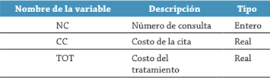

Desarrolle el siguiente algoritmo:
El consultorio del Dr. Lorenzo T. Mata Lozano tiene como política cobrar la consulta con base en el número de cita, de la siguiente forma:
Las tres primeras citas a $200.00 c/u.
Las siguientes dos citas a $150.00 c/u.
Las tres siguientes citas a $100.00 c/u.
Las restantes a $50.00 c/u, mientras dure el tratamiento.
Se requiere un algoritmo para determinar:
Cuánto pagará el paciente por la cita.
El monto de lo que ha pagado el paciente por el tratamiento.
Para la solución de este problema se requiere saber qué número de cita se efectuará, con el cual se podrá determinar el costo que tendrá la consulta y cuánto se ha gastado en el tratamiento. Con este análisis se puede determinar que las variables que se van a utilizar son las que se muestran en la tabla
